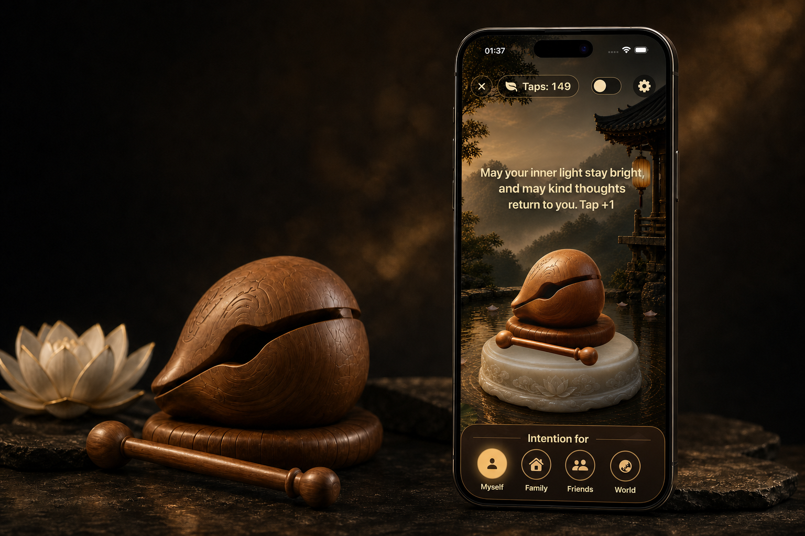

MUYU · Mindful Knocking
Be here,
one tap at a time.
A quiet wooden-fish app for personal reflection, intention, and a moment of stillness.
US$2.99One-time purchase · No subscriptions · No ads
Tap to knock. Keep a private tap count. Set a gentle rhythm for yourself, family, friends, or the world.
Private by design. No account, advertising, tracking, or analytics. MUYU is for personal reflection; it does not provide medical advice or promise spiritual outcomes.